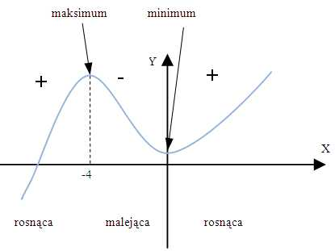

Wykres, ekstremum funkcji, miejsca zerowe
Ekstremum funkcji – maksymalna lub minimalna wartość funkcji.
Definicja
Funkcja f przyjmuje w punkcie x0 minimum lokalne f(x0),
jeśli istnieje δ>0 taka, że dla każdego x ∈ (x0- δ; x0+ δ) i x ≠ x0
zachodzi nierówność f(x) > f(x0)
Definicja
Funkcja f przyjmuje w punkcie x0 maksimum lokalne f(x0),
jeśli istnieje δ>0 taka, że dla każdego x ∈ (x0- δ; x0+ δ) i x ≠ x0
zachodzi nierówność f(x) < f(x0)
Twierdzenia Fermata – warunek konieczny istnienia ekstremum
Jeśli funkcja f ma pochodną w punkcie x0 i osiąga w tym punkcie ekstremum,
to f’(x0)=0 (styczna do wykresu funkcji f w punkcie (x0,f(x0))
jest równoległa do osi OX.
Warunek wystarczający istnienia ekstremum
Jeśli funkcja f ma pochodną w przedziale (a;b) oraz f’(x) > 0 dla x ∈ (a; x0)
i f’(x) < 0 dla x ∈ (x0; b), to f ma w punkcie x0 maksimum.
Jeśli funkcja f ma pochodną w przedziale (a;b) oraz f’(x) < 0 dla x ∈ (a; x0)
i f’(x) > 0 dla x ∈ (x0; b), to f ma w punkcie x0 minimum.

»Rysunek obrazujący ekstrema funkcji
Projekt wykonany w ramach projektu "Programistyczne Koło Naukowe".
by Kacper0510, Kowal-Michal & BartoszBudzyn
© 2022
 Wykres funkcji
Wykres funkcji